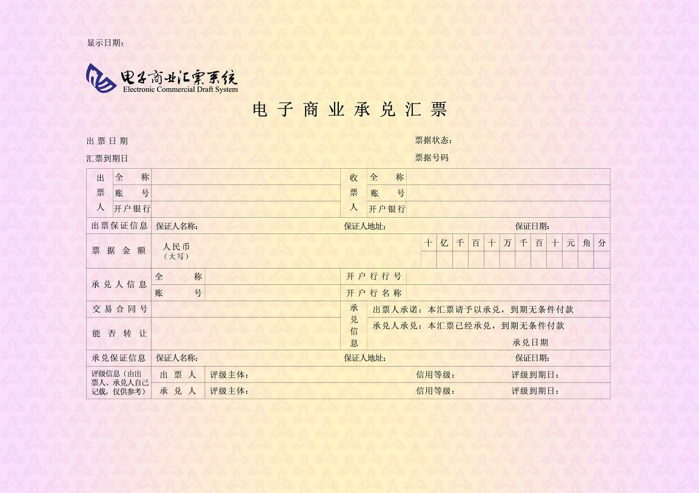

●什么是电子商业承兑汇票
电子商业承兑汇票是指出票人依托电子商业汇票系统，以数据电文形式制作的，由银行承兑后在指定日期无条件支付确定金额给收款人或持票人的票据。与电子银行承兑汇票不同，电子银行承兑汇票由银行业金融机构、财务公司(统称金融机构)承兑，而电子商业承兑汇票由金融机构以外的法人或其他组织承兑。电子商业汇票的付款人为承兑人。

◆电子商业承兑汇票适用于哪些企业？
1、适用于所有的采用银行承兑汇票或商业承兑汇票进行结算的国内贸易往来，开票方需要开通其账户行的网上企业银行。收票方需要开通其账户行网上企业银行；
2、适用于一年期以内的贸易结算。ECDS电票的付款期延长为一年。票据贴现的期限也被相应的调整电子商业汇票开通银行：目前电子商业汇票系统（ECDS）以开通上线的银行，推荐如下：
a、国有商业银行：中国工商银行、中国农业银行、中国建设银行、交通银行。
b、股份制银行：招商银行、中信银行、光大银行、华夏银行、广东发展银行、深圳发展银行、上海浦东发展银行、民生银行、恒丰银行、南京银行、浙商银行、渤海银行、北京银行、上海银行等。
◆电子商业承兑汇票特点
1、与纸质汇票相比，电子商业汇票能保证唯一性、完整性、安全性，规避假票和克隆票风险;
2、经银行承兑的电子商业汇票较之商业承兑汇票具有更为可靠的银行信用保证，流通范围广，变现能力强，既减少了企业的资金占用，又节省了资金使用成本;
3、对于卖方来说，对现有或新的客户提供远期付款方式，可以增加销售额，提高市场竞争力。对于买方来说，利用远期付款，以有限的资本购进更多货物，最大限度地减少对营运资金的占用与需求，有利于扩大生产规模。
◆电子商业汇票系统有哪些业务功能？
电子商业汇票系统的基本业务功能包括：与电子商业汇票有关的票据托管业务、票据信息接收及存储业务、转发电子商业汇票信息业务、更新电子商业汇票信息业务、资金清算业务、信息服务业务、商业汇票公开报价业务、纸质商业汇票登记查询业务。
●银行见票拒付款，如何理解票据无因性？
◆案情简介：电气公司得汇票，某市分行拒付款
1995年8月6日，某市A电器集团公司与某县对外贸易公司化工建材分公司签订一份价值203765元的A冰柜、A空调购销合同。合同签订后，化工建材公司预付货款8万元，A公司供给化工建材公司价值202797元的电冰柜和空调。电器公司在催要货款过程中，双方于1995年8月17日又签订一份价值492800元的空调、冰柜购销合同。为付款，化工建材公司向刘某借款，并从某县支行申领到一张以刘某为户名的20万元现金汇票交付给电器公司(此款包括8月6日的合同款122797元，余下款作为8月17日合同的预付款)。电器公司持该汇票到某市分行要求兑现。因汇票密押错误，某市分行拒付。电器公司遂将该银行诉之法院。
法院判决：票据抗辩有相对性，判决承担付款义务
法院经审理查明，汇票密押错误，系某县支行工作失误所致。在A电器公司要求兑付汇票过程中，某县支行先后发出4封电报催收。付款单位以有纠纷和汇票方汇款人刘某挪用公款为由，电告某市分行协助不要解付，要求汇票作废处理，退回某县支行。此外，在A电器公司要求兑付汇票过程中，某县检察院出具通知函，以刘某挪用公款为由，要求某县支行不得更改密押。其间，某市分行根据内部结算办法规定先后发出几封电报给某县支行，要求进行查询答复、更改密押，但某县支行始终未更改密押。根据我国《票据法》第十三条规定，判决某市分行承担付款义务。
◆律师说法：如何理解票据无因性？
我国《票据法》第十三条规定，票据债务人不得以自己与出票人或者与持票人的前手之间的抗辩事由，对抗持票人。但是，持票人明知存在抗辩事由而取得票据的除外，这就是票据的无因性原则。某市分行应否解付的依据在于持票人所持汇票是否有效，如果银行汇票的形式符合法定要求，则银行应无条件付款。在本案中，由汇票的形式看：发票人是某县支行，付款是某市分行，收款人为电器公司，其形式合法；从汇票记载的内容看，也符合法律的规定；从其取得方式看，天吉电器集团公司从某县支行申领，取得途径亦是正常的。而根据票据的无因性，付款方某市分行所负的审查义务也仅限于以上各项内容，而不必审查收、付双方的原因关系以及双方是否存在纠纷等实质性的内容。因此，该汇票是有效的，某市分行应该承担付款义务。
以上就是关于“银行见票拒付款，如何理解票据无因性？”案例的具体介绍，在商事诉讼纠纷中，如果遇到票据纠纷的话，一定要积极咨询专业的律师，寻求专业律师的法律意见，才能有效、及时的维护自己的合法权益。
●您不可不知道的五点票据背书知识！
◆背书主要包括质押背书、转让背书与委托收款背书。银行在作为质权人、受让人或受托人接受票据背书时，应当重点审查票据的真实有效性、背书连续性、背书形式的完备性及票据不存在权利瑕疵。
◆以票据提供质押担保的，出质票据是否应作质押背书?
担保法司法解释将质押背书作为票据质权的对抗要件，未背书的，质权人虽可取得质权，但该质权不得对抗善意第三人。票据法司法解释将质押背书作为票据质权的取得要件，未背书的，不构成质押，质权人不能取得质权。 关于质押背书的效力因存有上述争议，谨慎起见，银行在接受票据质押时，应要求出质人在该票据上作质押背书。
◆汇票质押业务项下，主债务到期时如何解除质押或实现质权?
根据《中国人民银行关于完善票据业务制度有关问题的通知(银发[2005]235号)》规定，以票据提供质押担保的，主债务履行完毕，票据解除质押时，我行作为质权人应以单纯交付的方式将质押票据退还出质人。票据到期时，由持票人(出质人)按支付结算制度的有关规定行使票据权利;质押票据所担保的债务到期后，债务人未能如期履行债务时，我行作为质权人可依法实现质权，但不得将票据进行转让或者贴现。我行可比照汇票贴现到期收回的处理手续，并在托收凭证备注栏注明“质押票据收款”字样。 若实践中，个别地区已有行之有效的成熟操作惯例且不实质违反法律法规规定的或我行有进一步明确规定的，可按当地操作惯例或我行规定执行。
◆ 如出票人在汇票上记载了“不得转让”字样的，银行能否对其进行贴现或接受该汇票质押?
《票据法》第二十七条规定，“出票人在汇票上记载“不得转让”字样的，汇票不得转让。”《最高人民法院关于审理票据纠纷若干问题的规定》第四十八条规定：“依照票据法第二十七条的规定，票据的出票人在票据上记载“不得转让”字样，票据持有人背书转让的，背书行为无效。背书转让后的受让人不得享有票据权利，票据的出票人、承兑人对受让人不承担票据责任。”《最高人民法院关于审理票据纠纷若干问题的规定》第五十三条规定：“依照票据法第二十七条的规定，出票人在票据上记载“不得转让”字样，其后手以此票据进行贴现、质押的，通过贴现、质押取得票据的持票人主张票据权利的，人民法院不予支持。”依据上述规定，出票人在票据上记载了“不得转让”字样的，对于该汇票，我行不得对其进行贴现或接受该汇票质押。
◆银行在进行票据贴现时应尽到何种审查责任?
在票据贴现业务中，理论上，我行对贴现汇票承担的是形式的审查责任。一是审查所受让票据是否具备票据法规定的绝对记载事项、票据背书是否连续;二是向承兑行作出票据是否真实的查询，并得到肯定答复;三是对贴现申请人提交的交易合同以及增值税发票的原件进行形式审查。 若我行对票据贴现有进一步明确规定的，参照我行管理规定执行。
◆ 商业承兑汇票保贴业务中，除对票据进行审查外，还应关注哪些问题?
在商业承兑汇票保贴业务中，我行给予出票人保贴额度，承诺对其签发的商业汇票进行贴现。为避免争议，应在保贴协议中明确，我行给予出票人保贴额度，视为对出票人进行授信，占用出票人在我行的综合授信额度，在有第三方对出票人在我行的授信提供最高额担保的情形下，应在保贴协议及最高额担保合同中明确，保贴协议项下我行对出票人的授信在最高额担保的范围之内。同时应注意保贴协议的出票人与担保合同中的被担保人保持统一(避免出现保贴协议债务人为贴现申请人，被担保的债务人为出票人)。
在商业承兑汇票保贴业务中，应客户要求，我行必须出具保贴函的，应尽量做到一票一函，且在保贴函中应明确我行承诺予以贴现的票据应为经我行审查通过的票据。
●银行承兑汇票到期解付
◆银行承兑汇票持票人持汇票向开户行(或出票行)提示付款，持票人开户行收妥后交换到出票行，出票行验证汇票无误后付款的行为就叫解付。银行承兑汇票到期解付流程是怎么样的？
银行承兑汇票签发后，出票人通过背书转让将票据所有权转给票面收款人，收款人可以再进行贴现，然后可能还要经过一系列转贴现等流转，最终在票面到期日之前，一般在到期日一个星期前，票据的持有人会通过向承兑行发出托收，承兑行接收到持有人发来的票据原件后，一般会在票面到期日当天(如果票面到期日在国家的法定非工作日，则要进行顺延)将票款通过大额支付系统无条件划付给托收人，这个过程就是银行承兑汇票到期解付的大概流程。
需要注意的是如果是我们自己去银行解付，先要检查一下承兑汇票，看是否有印鉴章模糊、多盖印鉴章、骑缝章不骑缝、印鉴章加盖错误等问题，如果有的话，应该要让相对应的公司出具证明。
可以能解付的银行只有两个，一是公司的开户行，另外一个就是汇票的出票行，一般拿到公司的开户行。填写托收凭证，将付款人的全称、账号开户行填写完整，地址不填也可由银行查找信息再去填写，而收款人填写自己公司，也许要将公司全称、账号、地址、开户行填写完整。汇票的金额必须与承兑汇票上的金额一致，大小写必须一致，并且注意填写正确。凭证上的托收凭证的名称就直接填写：“银行承兑汇票NO:XXXXXXXX/XXXXXXXX,其余的信息可以不填写。填写完整后，应该在“托收凭证”第二联上加盖自己公司的预留印鉴章。
在银行承兑汇票的最后的一个背书框里加盖自己公司的预留印鉴章，并在背书框写上“委托收款”，在被背书人上填写自己公司的开户行。将银行承兑汇票的原件、托收凭证、相关的证明拿到开户行，到柜台进行请求解付，银行受理后一般5-7个工作日就可以下款了。
以上信息均为银承宝搜集整理，内容仅供参考，具体银行承兑汇票解付事项和需准备资料请咨询出票行或开户行。
●银行承兑汇票结算方式的特点
◆银行承兑汇票是商业汇票的一种。是由在承兑银行开立存款账户的存款人出票，向开户银行申请并经银行审查同意承兑的，保证在指定日期无条件支付确定的金额给收款人或持票人的票据。对出票人签发的商业汇票进行承兑是银行基于对出票人资信的认可而给予的信用支持。主要的票据行为包括开票、提示承兑、贴现、提示付款、付款、追索等。背书是银行承兑汇票主要流通方式之一，是将票据权利转让给其他人行使的一种票据行为。 相比较其他结算方式，银行承兑汇票结算具有如下特点：
1.给出票人带来好处。银行承兑汇票具有结算功能，便于促成买卖双方交易的完成，还具有短期融资功能，在出票人资金不充裕的情况下，提供信用保证，且利息费用较流动贷款低;同时对提升出票人的信誉、形象有所帮助，银行为出票人开出银行承兑汇票，可为合作者提供信心。
2.给收票人带来好处。银行承兑汇票能避免坏账风险，因为银行承兑汇票到期时由银行承兑付款，这种确定的资金回笼可以提高收账率;增加收票人的资产流动性，银行承兑汇票可用于背书转让、贴现、质押等资金结算、融通，无疑增加了企业资产的流动性、弹性;可促进收票人的产品销售，增加盈利，提高产品的市场占有率，因为仅凭企业自身信用是不够的，如果增加了银行信用，就降低了收款风险，更能促成交易的完成。
正是由于银行承兑汇票的结算方便、资金融通、流通性好等特点，才使其市场规模巨大，发展速度飞快。
●电子承兑汇票出票信息错误应该怎么处理？
◆电子承兑汇票出票信息错误如何处理，纸质承兑汇票中，如果票面信息在出票过程中出现错误，出票人可以采取撤回措施。但电子承兑汇票系统中，如果客户出票信息登记错误应该怎么处理？
电子承兑汇票出票信息登记完成之后票面信息是不可以修改的。但是央行的业务流程和系统设计对此问题也有所准备，即出票人通过撤票操作可以撤销这张票据，然后再出一张新的票据。具体来说，在票据未提交收款人签收之前，电子承兑汇票出票人都可以撤销这张票据。另外各项业务均可撤回，也就是说出票人若发现票据信息有误但这张票据已经发给承兑人提示承兑或发给收款人提示收票，出票人都可以先撤回相关的业务申请，然后再将票据撤销。这种操作与现行纸质票据中的未用退回非常类似。
●电商承兑人未在规定时间付款如何处理？
◆电子商业汇票汇票承兑人在票据到期后收到提示付款请求，且在收到该请求次日起第三日（遇法定休假日、大额支付系统非营业日、电子商业系统非营业日顺延）仍未付款的情况，接入行、接入财务公司应按其与承兑人签订的《电子商业汇票业务服务协议》，进行如下处理：
◆承兑人账户余额在该日电子商业汇票系统营业截止时足够支付票款的，则视同承兑人同意付款，接入行、接入财务公司应扣划承兑人账户资金支付票款，并在下一日（遇法定休假日、大额支付系统非营业日、电子商业汇票系统非营业日顺延）电子商业汇票系统营业开始时代承兑人做出付款应答并代理签章。
◆承兑人账户余额在该日电子商业汇票系统营业截止时不足以支付票款的，则视同承兑人拒绝付款，接入行、接入财务公司应在下一日（遇法定休假日、大额支付系统非营业日、电子商业汇票系统非营业日顺延）电子商业汇票系统营业开始时代承兑人做出拒付应答并代理签章。
●票据融资套利的三种模式
◆委托贸易付款
如果融资企业没有额外付出成本，那些年化收益率超过10%的理财，不是由平台垫付，就是有其他盘活票据资产额外赚取收益的方法。
通过处置盘活所质押的票据资产额外赚得收益的一般是P2P平台，通过这种方式，平台给到投资人的年化收益率可高达18%甚至20%以上。这些平台此前都有多年的线下票据中介或贸易、结算代理的基础，积累了大量的银行、融资企业、贸易公司等票据融资链条所需资源，准入门槛较高。
委托贸易付款就是额外赚取收益最常见的方式，一般依托国内贸易结算。其基本业务流程是，融资企业把票据质押给平台，平台委托银行或第三方托管，投资人通过平台把资金借给融资企业；同时，平台与融资企业约定平台有处置票据的权利，平台再通过其线下的贸易结算资源，用所质押票据开展贸易代付业务，并赚取代付手续费。
在这种模式中，票据资产的质押率都较高，一般接近100%，到期后融资企业不再赎回票据；平台不仅可以一次性赚取3%的半年期票据贴现利息收益，还可以额外赚取贸易代付收益。
互联网票据理财委托贸易付款的模式中，投资人的资金借给融资企业，融资企业向平台卖断票据，一次性3%的成本；平台通过线下贸易代付处置票据后，由代付的收货商回款来偿还投资人本金，收益则由融资企业和代付的收货商产生，相当于一笔资金进行了两次融资（票据买断式变现+票据代付），获得了两笔收益。
◆信用证循环回款
信用证循环回款是建立在国际贸易的基础上，并结合了信用证融资流程，期限基本是6个月。
融资企业把票据质押给平台，平台委托银行或第三方托管，投资人通过平台把资金借给融资企业；平台与融资企业约定，在项目期间，平台有处置票据的权利，但项目到期票据必须归位，解押后由融资企业赎回。
项目存续期间，平台把票据抵押给银行，抵押银行一般与托管银行为同一家，银行结合平台线下的代理进口业务开具信用证，信用证在境外银行贴现后变为现金，再结合平台线下的代理出口业务实现资金回流境内。
整个信用证境内外汇款的过程，进出口企业需要给平台线下业务缴付中介费用，扣除银行的贴现和相关手续费，平台可以赚取1%-2%左右的收益。这种情况下，融资企业票据质押给平台的质押率是很低的，一般在30%左右，很少超过50%。
除了通过线下代理进出口与自己相关联的公司进行贸易外，平台线下公司还以顾问的形式协助外贸公司完成上述流程。
理财平台质押的票据质押给银行后就取得了银行授信额度，正好进口企业缺少抵押物，平台就帮进口企业提供抵押物，甚至可以帮融资企业垫付保证金，帮助其从银行开出票据。当然，这些手续都是要收费的。
上述信用证回款流程中，从开出信用证到境外贴现资金回流境内，一般需要10天左右，最多不超过1个月，而平台所质押的融资企业的票据期限一般都是6个月。也就是说，互联网票据理财平台的一笔票据质押项目下，平台线下关联公司至少可以完成6次信用证回款流程，甚至10次以上，最高可达18次。
◆票据质押融资
银行票据理财产品前几年就出现过，银行把理财产品的资金投向票据资产获得收益，投资人通过购买银行理财产品进行间接投资。
银行票据理财产品兴起于2011年，一般通过信托通道，认购银行贴现票据资产的收益权，有些甚至直接对接企业持有票据，同时票据转由银行或第三方托管，持有票据的企业则从贴现银行或信托计划获得资金，相当于票据收益权的转让。由于贴现流程存在合规瑕疵，为信贷出表提供了通道，且规模迅速做大至几千亿，最终银监会在2012年初叫停了票据信托和相关银行理财产品。
与银行票据理财产品和票据信托不同的是，互联网票据理财不直接涉及票据的所有权和收益权，而是采取票据质押的方式。其基本流程是，融资企业把持有的票据质押给互联网票据理财平台指定的银行或第三方，由其托管，投资人通过互联网票据理财平台把资金借给融资企业；企业按期还款后接押票据，企业如果违约，互联网票据理财平台有权利通过票据托管人，持所质押票据找开票银行承兑，最终完成投资人还款。
票据质押融资盘活了企业的票据资产，增加了流动性，其效果与银行贴现无异，相当于用互联网票据理财平台筹集投资人的资金为银行垫付票据贴现。
●不能转让的另类票据
◆票据知识,中国票据网,票据鉴别仪,银行承兑汇票
按照票据法规定，不得转让的票据有四种：
1、背书人记载“不得转让”字样的票据，背书人在汇票上记载“不得转让”字样，其后手再背书转让的，原背书人对后手的被背书人不承担担保责任。
2、出票人记载“不得转让”字样的票据，这种票据关系被严格限制在出票人和收款人之间，只有原始持票人享有票据权利，持票人不得以背书或者其他方式将票据权利转让给他人。
3、被拒绝承兑、被拒绝付款或者超过付款提示期限的票据，这些票据不得背书转让，背书转让的，背书人应当承担汇票责任。
4、记载“委托收款”字样的票据，被背书人有权代背书人行使被委托的票据权利，但被背书人不得以背书转让汇票权利。银行承兑汇票
上述几种票据中，第一种和第二种的票据一般不得质押。记载“委托收款”字样的票据的质押应当认定无效。因为被背书人只是受托行使票据权利，而不是票据权利的真正享有人，《票据法》35条第1款对此类票据背书转让的禁止规定是一种一定规定，而债权人无视“委托收款”记载仍然接受质押的，就没有必要对其进行保护;其次，被拒绝承兑，被拒绝付款或者超过付款提示期限的票据原则上也不得质押，但如果这种票据又背书转让而前面又有背书人承担汇票责任的，应当可以用于质押，因为此时该票据上又存在了可向其主张的票据权利。
●银行承兑汇票遭到拒付退票怎么处理？
◆拒付是指持票人遭到拒绝承兑或持票人提示汇票要求付款时，遭到拒绝付款，也称退票。除了拒绝承兑和拒绝付款外，付款人遭遇死亡或宣告破产，以致付款事实上已不可能时，也称拒付。
1、银行承兑汇票拒付退票
遇到承兑行拒绝付款，委托收款行应立即组织有关人员对该票据进行审查，看拒付是否合理。若拒付理由成立，自收到拒付理由书的有关证明3日内，书面通知贴现申请人及其前手，根据《票据法》第七十一条及《支付结算办法》第33条的规定依法行使追索权。
2、银行承兑汇票拖延支付或无理拒付
承兑银行在汇票超过到期日10日仍未付款的，营业部门人员向承兑行发出催收通知，该通知附同情况说明一并发给承兑行的上级行及当地人行。按照《票据法》第106条、《支付结算办法》第241条和《票据管理实施办法》第33条的规定，要求付款人依法承担赔偿责任。
3、银行承兑汇票被拒付的处理办法
在商业活动中,银行承兑汇票由于其安全性和流通性较高,得到广泛应用,但是由于我国《票据法》立法对于善意第三人保障不足,我们仍然要提醒使用承兑汇票的单位提高警惕,加强承兑汇票的管理.那么承兑汇票被挂失止付或者拒付后应该怎么处理?
首先，根据汇票确定出票人、背书人、保证人、承兑人、付款人等债务人,根据票据法的规定以上各方对于票据被拒绝支付时有付款责任。
其次，取得银行拒绝付款的证明材料,通常银行如果拒绝支付会出具拒付通知一类的文件，如果被拒绝也应以其他方式取得相应文件，否则可能丧失对前手的追索权。
最后，尽快搜集证据向法院起诉，尽管票据具有无因性(即只要你持有票据就应该获得款项)。但我们的法院在司法实践中还是会关注更多的东西,因此证据收集极为重要，要将与该票据相关的业务资料收集作为证据提交，如果仅做往来款也要理清楚往来背景。
●企业电子票据业务操作注意事项
◆办理电票业务的前提条件
企业用户请注意，在办理电票业务前，请做好两个工作：
1.在有大额支付系统行号的银行网点开户。如果说你已经开好户了，确认下，该网点是否有大额支付行号。如果开户行没有大额支付行号，请到该网点的上一级支行重新开户。
2.走完上一步，记得向开户行申请开通U盾版的带“可转入、可转出”功能以及电票功能的网上银行，若已经开通网银，但是又不确定是否有该功能，打电话咨询银行即可。
◆可能遇到的麻烦
在实际的电票业务操作过程中，总是会碰到这样或那样的问题，不过主要还是来自于两个大的方面：
其一，是企业网银部分;
其二是背书部分。
1.企业网银部分
Q:问题一：
企业虽然开通了电子票据功能，却做不了电票业务，如：开票申请、票据签收、背书转让、贴现申请等。 原因：
出现这样的情况，很有可能是因为企业网银没有开通“可转入、可转出”功能或者企业网银中的组织机构代码号与实际不相符。
A:解决方案：
企业可请开户行查询网银信息，采取相应的补救措施。若是前一个原因，申请开通功能即可，若是后者则按照网银的管理办法调整好企业的组织机构代码证号即可。
Q:问题二：
出票人申请开票-银行审批通过并完成了主机开票操作，但是收款人却没有可签收票据信息。
原因：
这可能是因为收款人电子票据功能开通出现了问题一的两个情况，或者是因为在出票申请人申请开票时选择了“自动提醒收票”，但是你查询的时候收款人没有开通电子票据业务功能或所开通的电子票据功能不符合要求。
A:解决方案： 和问题一一样的情况，解决方案参照上面即可。若是因为选择了“自动提醒收票”，出票人就先把“自动提醒收票”的指令撤回，然后等收款人电子票据功能确切按要求开通了以后，出票申请人做一次“提醒收票”，收款人就可以签收票据了。
2.背书人问题
Q:问题：
背书人通过网上银行把电子票据背书转让出去了，但是对方没有可以签收的电子票据信息。
原因：
一是，背书人在背书时，被背书人的开户行应该是“XXX分行营业部”的，却选择了“XXX分行”。要知道“XXX分行”是没有组织机构代码号的，只有大额支付系统行号，因为通常来说，分行级的组织机构代码证号都分配给了XXX分行营业部，所以电子票据信息通过人行系统平台退回了原背书人的开户行。
二是，被背书人的开户行只有组织机构代码号，但是没有大额支付系统12位的行号，而网点只有同时具备组织机构代码号与12位大额支付系统行号才可以办理电子票据业务，不论是开票还是收票。
A:解决方案：
如果是原因一，背书人重新背书，选择正确的被背书人开户行即可。若是原因二，被背书人只要在组织机构代码号、大额支付系统12位行号都齐全的网点重新开立账户并开通网银、电子票据功能就能解决。
3.其他问题
Q:问题一： 客户通过网上银行电子票据功能模块申请签发电子银行承兑汇票，出现错误提示：无法查找该收款账户的银行行号。
原因：
收款人开户网点未开通大额支付行号。
A:解决方案：
收款人在组织机构代码号、大额支付系统12位行号双全的网点重新开立账户并开通网银、电子票据功能。
Q:问题二：
贴现申请人贴心啊业务申请发起后，贴现银行收不到贴现申请指令，无法办理贴现。
原因：
贴入行选择有问题。
A:解决方案：
问清楚贴现银行具体的贴现机构名称后，把原来的贴现申请指令撤销重新发出正确的贴现指令。
◆电票业务基本规定与操作技巧
1.电子票据的信息传递穿梭于企业网上银行、银行内部系统、人行电票系统之间，时间是：8：00-20：00。
企业的每个票据动作(出票、承兑、背书转让、签收、提示付款、质押等)都通过人行电票系统登记，因此，对同一票据的两个连续动作(如签收以后背书转让)之间要给予30-60秒左右的缓冲时间，以免操作过快，人行系统反应不过来。
2、电票业务操作都在网上银行的平台中完成，遇到不懂或者没有把握的操作时，要多与开户行沟通，必要时请开户行的客户经理上门指导操作(或者电话指导下操作)。
操作过程出现报错画面或者情况异常时，一定要把画面截图发送到开户网点，以便及时发给上级行查找原因，以最快速度解决问题。
3、按照人行的规定，电票业务指令发出后，只要下一手接收指令的人还没有签收，原指令发出者均可以撤销，但是如果下一手接收指令者已经签收了指令，该指令就不能撤回了。
4、银行对贴现业务实行集中管理，开户的网点银行不一定是贴现行，因此，发出贴现申请前一定要问清楚贴现行信息，以免出错。
5、按照人行的制度和系统设计理念，贴现申请人发出贴现申请指令时，贴现利率都是由出票人输入的，这时信息已经到达人行票据管理系统，人行系统已经默认当天为贴现日并按照企业录入的利率计算出利息;
如果贴现行一直过了N日以后再签批该笔业务的话，那就会多收企业N-1天的利息。因此，如果企业当天发起了贴现申请而银行当天未能完成审批的，贴现申请人应该撤回指令，第二天再重新发起贴现申请，以免多付利息。
6、电子票据在不同的金融机构之间是可以相互流通的，但是由于各金融机构的网上银行各有特色，如有疑问请咨询当地开户银行。
7、同一企业在不同金融机构的帐户都开通了电票功能时，如果企业想把电票从A银行背书转让给B银行(即自己背书给自己)，人行电票系统是不允许的;但是，您收到的电票无论落在哪家银行，贴现业务都可以在任一已开通电票贴现业务的银行办理，只要在电票落脚行的网银发起时，贴入行选择正确就可以了。请大家在业务操作时注意。
结合今年票据业务发展的趋势，电票也成为众多商业银行的关注点，在央行发布224号文推行电票的背景下，随着票交所的上线，电票的交易主体地位被确定，票交所对纸质票据电子化的安排以及电票的配合推广，电票已成为商业银行发展票据业务的必然趋势。
目前很多中小银行受区域、人才、系统等多种因素的限制，电票业务发展相对落后，如何通过电票业务经营创新实现常规票据业务的突破，如何提升全行电票业务操作技能及盈利能力已成为商业银行发展电票业务重点关注内容。《电票操作与创新应用及商票业务发展策略解读专题研修班》也将对电票操作与电票业务创新做详细解读。
从商业承兑汇票业务来看，央行鼓励企业使用电子商业承兑汇票，同时票交所的建立使得企业信用评估体系更加完善，市场信息更加透明化，利率报价公开，银票业务利差收窄，开展商业承兑汇票业务进行票据业务转型，实现票据业务盈利的新渠道已成为全国众多银行密切关注的方向。
如何提升行内商票操作技能优化流程、如何把控商票业务开展的风险、如何快速实现商业承兑汇票业务推广抢占商业承兑汇票市场，成为商业银行发展商业承兑汇票业务亟需解决的难题。
●银行承兑汇票遭到拒付退票怎么处理？
◆拒付是指持票人遭到拒绝承兑或持票人提示汇票要求付款时，遭到拒绝付款，也称退票。除了拒绝承兑和拒绝付款外，付款人遭遇死亡或宣告破产，以致付款事实上已不可能时，也称拒付。
1、银行承兑汇票拒付退票
遇到承兑行拒绝付款，委托收款行应立即组织有关人员对该票据进行审查，看拒付是否合理。若拒付理由成立，自收到拒付理由书的有关证明3日内，书面通知贴现申请人及其前手，根据《票据法》第七十一条及《支付结算办法》第33条的规定依法行使追索权。
2、银行承兑汇票拖延支付或无理拒付
承兑银行在汇票超过到期日10日仍未付款的，营业部门人员向承兑行发出催收通知，该通知附同情况说明一并发给承兑行的上级行及当地人行。按照《票据法》第106条、《支付结算办法》第241条和《票据管理实施办法》第33条的规定，要求付款人依法承担赔偿责任。
3、银行承兑汇票被拒付的处理办法
在商业活动中,银行承兑汇票由于其安全性和流通性较高,得到广泛应用,但是由于我国《票据法》立法对于善意第三人保障不足,我们仍然要提醒使用承兑汇票的单位提高警惕,加强承兑汇票的管理.那么承兑汇票被挂失止付或者拒付后应该怎么处理?
首先，根据汇票确定出票人、背书人、保证人、承兑人、付款人等债务人,根据票据法的规定以上各方对于票据被拒绝支付时有付款责任。
其次，取得银行拒绝付款的证明材料,通常银行如果拒绝支付会出具拒付通知一类的文件，如果被拒绝也应以其他方式取得相应文件，否则可能丧失对前手的追索权。
最后，尽快搜集证据向法院起诉，尽管票据具有无因性(即只要你持有票据就应该获得款项)。但我们的法院在司法实践中还是会关注更多的东西,因此证据收集极为重要，要将与该票据相关的业务资料收集作为证据提交，如果仅做往来款也要理清楚往来背景。
●票据贴现和票据组合业务模式
传统的银票业务已远远不能满足企业主的要求，银行需从电子票据、商票等维度入手，切实融入到企业的贸易过程之中。下面为您重点剖析“票据贴现”和“票据组合”这两种模式。
◆票据贴现
票据贴现是指资金的需求者，将自己手中未到期的商业票据、银行承兑票据或短期债券向银行或贴现公司要求变成现款，银行或贴现公司(融资公司)收进这些未到期的票据或短期债券，按票面金额扣除贴现日以后的利息后付给现款，到票据到期时再向出票人收款。
◆“协议付息票据贴现”运作模式
在商业交易中，买卖双方的交易地位随着商品的供求关系、双方实力变化而不断迁移，这也直接导致了票据贴现利息承担的讨价还价，银行夹杂在双方交易结算博弈中，作为执行者操作双方的利益分割。
①买方企业与卖方企业均在贴现银行开立存款账户，买方或者卖方向银行提出授信申请(如使用其他银行承兑的银行承兑汇票则无需授信);
②贴现银行根据授信业务有关规定对申请人实施授信，确定协议付息贴现业务授信额度，签订协议付息补充协议，确定双方付息比例;
③买方企业签发票据，交付卖方企业;
④卖方持票及跟单资料向贴现银行提出协议付息贴现业务申请，提交相关材料;
⑤贴现行对卖方企业提供的银行承兑汇票或商业承兑汇票及跟单资料进行审查，确保票据、贸易背景真实、有效;
⑥贴现行按比例借记买方企业存款账户，确认贴现利息收妥后，将票面额扣除卖方应付利息后贷记卖方企业存款账户;
⑦票据到期，贴现银行向承兑人发出托收。
◆“卖方付息票据贴现”业务运作模式
卖方付息票据贴现是指商业汇票持票人将未到期的商业汇票转让给银行，银行按票面金额扣除贴现利息后，将余额付给持票人的一种票据业务操作模式。
①客户持商业汇票向银行提出贴现申请;
②银行会计部门再次审核商业汇票的真实性，并由信贷审批部门按照审批权限进行审批;
③银行审批同意后，客户当场背书转让汇票并办理相关手续;
④银行根据贴现金额将相应的资金划转到客户的存款账户;
⑤汇票到期，银行将银行承兑汇票/商业承兑汇票及委托收款凭证寄送给商业汇票付款人开户行(或承兑行);
⑥商业汇票付款人开户行(或承兑行)向贴现行划转汇票款项。
◆“买方付息票据贴现”运作模式
所谓买方付息贴现业务，是指卖方(贴现申请人)在商业汇票到期日前为取得资金，在由买方贴付利息或者由买方和卖方共同支付利息后，将票据权利转让给票据营业部的票据行为。
卖方付息票据贴现是指商业汇票持票人将未到期的商业汇票转让给银行，银行按票面金额扣除贴现利息后，将余额付给持票人的一种票据业务操作模式。
◆票据组合
所谓“票据系列多重产品组合服务方案”，就是指以银行承兑汇票、商业承兑汇票以及电子承兑汇票这三款金融工具为核心，将它们按照不同期限、不同额度进行交叉配比，进而形成“票据池”管理模式。在日趋纷杂的票据融资产品当中，“票据池”管理模式日益受到市场关注，由此衍生出多种产品组合设计模式，其中最为典型的包括：
(1)长银票→短银票→长银票;
(2)长银票→短银票→长商票;
(3)银行承兑汇票质押项下保理;
(4)商业承兑汇票质押项下保理;
(5)第三方票据质押项下保理。
上述几种服务形态在业界运用得较多，创新形式也是多种多样，值得银行业在创新中小企业融资产品时重点关注。
◆“信用证担保银票业务”运作模式
代理出口商取得国外进口商开具的信用证(保函)后，在信用证(保函)的额度内申请签发银行承兑汇票作为预付款支付给国内供应商，由国内供应商向银行申请办理银行承兑汇票贴现，取得资金用于采购原材料，进行生产备货，及时向代理出口商交货，代理出口商按时办理货物的出口，该业务是一项典型的贸易融资业务。
◆“银票质押贷款业务”运作模式
银行承兑汇票质押贷款是指客户以银行承兑汇票作为质押，银行提供短期流动资金贷款的一种授信业务方式。
◆“电子银票质押业务”运作模式
所谓电子商业汇票质押业务，是指电子商业汇票持票人为了给债权提供担保，在票据到期日前在电子商业汇票系统中进行登记，以该票据为债权人设立质权的票据行为。所有业务参与者(包括企业、银行、人民银行、财务公司、被代理行)均可发起质押申请和接受质押申请。
A.合同签订或供货指的是：出票人和持票人之间的贸易合同的签订和供货;
B.转发和转移电子票据指的是：出票人和持票人的开户行与人民银行的电子商业汇票系统(ECDS)之间票据转发和转移;
C.签发和签收电子商业汇票指的是：出票人和持票人与他们各自的开户行之间的电子票据的签发和签收。
◆“票据池业务”运作模式
这种运作模式是指银行对客户持有的并暂时没有贴现需求的商票提供鉴别、查询、保管、托收等“一揽子”服务，银行可以根据客户的需要，随时提供汇票贴现、质押开票等一种综合票据管理业务。通过这种汇聚成“池”的管理方式，主要可以实现两大功能：
功能之一：管家式服务;
功能之二：开发票据大户的利器，组合嵌套“长银票→短银票→长银票”、“长银票→短银票→长商票”等等。
综上所述，围绕着票据这一金融交易工具，衍生出来的创新服务模式多种多样，并没有统一的定式，需要产品经理和客户经理在实际运用中灵活设计。
与此同时，上述介绍的细分模式也没有先后顺序之分，应当按照客户经营状况、从属行业状况、资金周转周期等等综合评定。
●办理银行承兑汇票承兑业务手续费明细
◆银行承兑手续费是指金融机构在办理银行承兑汇票承兑业务过程中所产生的费用。银行承兑手续费包括银行承兑汇票承兑手续费、银行承兑汇票额度管理费和银行承兑汇票工本费。
1、银行承兑汇票手续费
办理纸质银行承兑汇票，承兑银行一般按照银行承兑汇票出票金额的万分之五计收手续费，由承兑银行从付款单位存款户中扣收。例如，出票金额为1000万元，银行承兑汇票手续费为5000元。如果每笔银行承兑汇票手续费不足10元的，按10元计收。
办理电子银行承兑汇票，目前并没有统一规定的电子银行承兑汇票承兑手续费，各个银行执行不同的标准。例如，招商银行电子银行承兑汇票承兑手续费为票面金额的千分之二；工商银行电子银行承兑汇票手续费按票面金额的0.05%收取（目前按9折收取），电子商业汇票短信提醒服务费0.3元/条。
如果是因为企业自身原因，导致签发的银行承兑汇票作废，需要重新承兑签发的，则需要再一次支付银行承兑汇票手续费。因此，企业在签发银行承兑汇票，应该仔细、认真。
2、银行承兑汇票额度管理费
银行承兑汇票额度管理费是指办理非全额保证金银行承兑汇票时，承兑银行针对敞口部分收取的额度管理费。银行承兑汇票额度管理费各家银行收取标准不同，而且是因为企业的等级而不同，一般区间从0-2.5%。银行承兑汇票额度管理费公式为：额度管理费=实际开票所占用额度*额度管理费率/12*开票的月数（实际开票所占用额度，比如40%保证金的票即占用60%的额度，1000万0占用600万）。需要提醒的是，在“票面金额×敞口比例”后，不要四舍五入，无论小数点后有几位，都用作乘基，计算出来的最终数值可以四舍五入。
3、银行承兑汇票工本费
按照规定，纸质银行承兑汇票每张收取0.28元工本费。
●银行承兑汇票委托收款错误及解决方案
◆银行承兑汇票委托收款主要存在以下三大错误：
一、多处银行承兑汇票委托收款 表现为银行承兑汇票的几手背书中，有两处以上的背书都有“委托收款”字样。
二、银行承兑汇票委托收款行与结算凭证的委托收款行不符 具体表现为银行承兑汇票的委托行为XX工行，而结算凭证上却盖着XX农行的结算章。
三、银行承兑汇票委托收款凭证填写不正确 实务操作中具体表现为银行承兑汇票付款人名称填写不正确，收款人与开户行填写不规范。 银承宝提供银行承兑汇票委托收款错误解决方案，供大家参考。
属于银行承兑汇票委托收款行与结算凭证的委托收款行不符和委托收款凭证填写不正确等结算凭证错误，可说明情况，重新填写正确凭证，承兑行应该给予解付。但属于因不懂银行承兑汇票背书填写而造成多处委托收款背书时，则逐个要求其合法取得承兑汇票背书的前手证明背书的连续性，以此依法举证，承兑银行也应给予解付。
●十一种银行承兑汇票不能贴现情况
◆银行承兑汇票贴现是金融机构的一种信贷业务，应注意控制风险，因为在一定的情况下银行承兑汇票不能贴现。那么哪些银行承兑汇票是不能贴现的呢?不能贴现的银行承兑汇票应该怎么办?
什么是银行承兑汇票贴现? 银行承兑汇票贴现是指银行承兑汇票的贴现申请人由于资金需要，将未到期的银行承兑汇票转让于银行，银行按票面金额扣除贴现利息后，将余额付给持票人的一种融资行为。
哪些银行承兑汇票不能贴现? 银行承兑汇票贴现是金融机构的一种信贷业务，应注意控制风险，对有以下情形之一的银行承兑汇票，不得办理贴现业务。11种银行承兑汇票不能贴现情况：
(1)银行承兑汇票法定要素不全;
(2)银行承兑汇票背书不连续;
(3)内容有涂改，有关签章不符合要求;
(4)注有“不得转让”、“质押”字样;
(5)银行承兑汇票票面金额、期限等不符合规定;
(6)处于挂失止付公示催告期内的银行承兑汇票;
(7)承兑附有条件的;
(8)本营业单位承兑的未经背书转让的银行承兑汇票;
(9)银行承兑汇票粘单不符合标准;
(10)已收到承兑人发出停止办理贴现的通知;
(11)其他不得办理贴现业务的情形。
◆银行承兑汇票贴现不了应该怎么办?
(1)承兑汇票贴现，贴现银行一般都要求票据出票行为信用等级较高的银行，如商业银行、信用社等地方性质的银行出的票(除江浙带地方银行)贴现行基本不会收。
(2)预备贴现的承兑汇票，票面要素一定要清楚，后面填写的被背书人单位名称一定要与印鉴章上相符，印鉴章及骑缝章加盖一定要清晰。如有问题一定要相关单位出具证明作票据附件。
(3)最后一手背书人一定要与你们单位有业务往来，并有购销合同及开具的增值税发票(发票金额大于或等于票面金额)。
(4)实在无法贴现那就只有等票据到期托收了。
●电子银行承兑汇票背书转让的四大注意事项
1、电子银行承兑汇票通过电子化的手段完成票据流转，电子银行承兑汇票背书人通过网上银行、银行柜台或其他电子终端登录，录入背书申请信息(包括票据信息、背书人信息、被背书人信息)，使用背书人的数字证书加盖电子签名;
2、电子银行承兑汇票背书背书流转，在被背书人发起回复之前，背书人和被背书人均可操作票据，背书人可撤销背书申请，被背书人可回复(签收或驳回)背书申请。此时，系统按照时间优先的原则进行处理：如背书人先撤销背书申请，则该背书申请已撤销，被背书人不能再进行背书回复操作;
3、如被背书人先发起背书回复，则该背书申请按照被背书人的意思已签收或驳回，电子银行承兑背书人不能再撤销该背书申请。 电子银行承兑背书应当基于真实、合法的交易关系和债权债务关系，或以税收、继承、捐赠、股利分配等合法行为为基础。
4、电子银行承兑汇票背书必须记载下列事项： 一、背书人名称; 二、被背书人名称; 三、背书日期;四、背书人签章。 在电子银行承兑出票人或背书人汇票上记载了“不得转让”事项的，电子商业汇票不得继续背书。票据在提示付款期后，不得进行转让背书。
●电子银行承兑汇票背书转让的四大注意事项
1、电子银行承兑汇票通过电子化的手段完成票据流转，电子银行承兑汇票背书人通过网上银行、银行柜台或其他电子终端登录，录入背书申请信息(包括票据信息、背书人信息、被背书人信息)，使用背书人的数字证书加盖电子签名;
2、电子银行承兑汇票背书背书流转，在被背书人发起回复之前，背书人和被背书人均可操作票据，背书人可撤销背书申请，被背书人可回复(签收或驳回)背书申请。此时，系统按照时间优先的原则进行处理：如背书人先撤销背书申请，则该背书申请已撤销，被背书人不能再进行背书回复操作;
3、如被背书人先发起背书回复，则该背书申请按照被背书人的意思已签收或驳回，电子银行承兑背书人不能再撤销该背书申请。 电子银行承兑背书应当基于真实、合法的交易关系和债权债务关系，或以税收、继承、捐赠、股利分配等合法行为为基础。
4、电子银行承兑汇票背书必须记载下列事项： 一、背书人名称; 二、被背书人名称; 三、背书日期;四、背书人签章。 在电子银行承兑出票人或背书人汇票上记载了“不得转让”事项的，电子商业汇票不得继续背书。票据在提示付款期后，不得进行转让背书。
●带有银行保函的商业承兑汇票如何贴现？
银行保函+银行承兑汇票是目前市场上商业承兑汇票贴现主要模式之一，之所以强调要带有银行保函，是为了增强商业承兑汇票的信用。带保函商业承兑汇票贴现流程如下：
1、资金需求方告知开票银行及出具跟单保函的银行；
2、资金需求方向资金方银行提供以下手续进行审核：开票方以及接票方的六证一卡、公司章程、审计（验资）报告、财务报表、双方的贸易合同、发票提供复印件（如需补充资料，由银行一次性提出补充要求）；
3、资金方银行根据资料对该次融资报出利息和相关费用给资金需求方；
4、资金需求方接受报息后，签定操作协议；
5、资金需求方按资金方银行要求，与出具跟单保函的银行签暑三方支付协议并开出商业承兑汇票、跟单保函（内容按资金方要求）及购销合同、发票复印件等到资金方银行贴现；
6、资金方银行接到商票的全套手续后，对商票的全套手续如期进行核实（含核行，核行方式为实地核行或发查询函核行）；
7、资金方银行核实完后，办理贴现手续，出款，本次业务完成。
●银行承兑汇票拆分支付
银行承兑汇票拆分简单理解就是银行承兑汇票大票拆小票，是指以汇票承兑申请人提供的银行承兑汇票作为质押，办理以其面额为限的多笔银行承兑汇票的业务。下面银承宝为大家总结大票拆小票的申请条件，特点以及其试用范围和基本程序内容：
◆办理银行承兑汇票“大票拆小票”业务的申请资料需要准备的有
(1)银行承兑汇票拆分申办委托书
(2)经年检的营业执照或事业单位法人证书、组织机构代码证、经办人身份证(或护照)、贷款卡/证原件;法人身份证(或护照)
(3)交易双方签订的真实、合法的商品或劳务交易合同原件，或其他能够证实商品或劳务交易关系真实性的书面证明;背书连续、要素完整且未到期的银行承兑汇票
(4)与出票人(或直接前手)之间的增值税发票原件
(5)银行行认为需提交的其他资料
◆银行承兑汇票“大票拆小票”的特点
(1)节约企业的资金成本，增强企业活力
(2)便于企业使用承兑汇票进行支付结算，加快资金流通速度
(3)增加企业的融资渠道，使企业发展更快更强
◆银行承兑汇票“大票拆小票”所适用的范围
符合《贷款通则》并依法从事经营活动的法人单位或其他经济组织
◆银行承兑汇票“大票拆小票”业务申请的基本程序
(1)企业提出银行承兑汇票拆分申请
(2)业务受理行进行银行承兑汇票查询
(3)检验汇票及跟单文件
(4)双方签订银行承兑汇票拆分协议
(5)经办银行按照拆分总额度向企业签发银行承兑汇票
(6)银行承兑汇票拆分完成
●电子承兑汇票号结构详解
电子承兑汇票号码是出票登记成功后，系统自动生成唯一的电子票据号码。电子票据号码分为5个部分，共30位，全部由阿拉伯数字组成，详细如下：
票据种类标识（1位）
支付系统行号（12位）
出票信息登记日期（8位）
当天流水号（8位）
校验码（1位）
◆票据种类标识为两种：
1、为银行承兑汇票，
2、为商业承兑汇票。
◆支付系统行号为出票人开户行的支付系统行号。
◆出票信息登记日期是票据信息成功登记到ECDS的工作日。
◆当天流水号为ECDS系统当天唯一的流水号。
◆校验码为ECDS系统自动生成，用于防止录入错误。
★何为票据理财
承兑汇票是供应链金融中的一环，由于其风险低、门槛低、收益相对稳定等特点，近年来在国内投资市场热度不断攀升。一般来说，承兑汇票分为银行承兑汇票和商业承兑汇票，它们作为结算方式的一种，活跃于大型贸易采购之间，融资企业将所持票据质押于理财平台，平台据此设计、发布理财产品，再由投资者购买，这种模式就属于票据理财。
据了解，当前票据理财平台主要分为三大类，第一类是银行系，如工农中建交等国有大型银行，其优势是信用好，但年化收益率较低，一般在3%至4%之间；第二类是互联网系，如京东、苏宁的票据理财。互联网平台凭借其流量优势与企业开展合作，在其平台上出售票据资产，年化收益率在4%至5%之间；第三类是专业的互联网票据理财平台，如票大大、票据宝、金银猫等，这类平台给出的年化收益率在5%至9%之间。
“票据理财的本质是企业对个人的借贷模式，这种模式下，资金更加透明，借款主体信用相对较高，风险级别相比个人借贷完全不同。”票据宝金融部负责人余小瀚表示，企业将其持有的未到期商业汇票通过质押方式，将票据收益权转让给投资人，以解决企业自身流动资金问题。在票据到期后，投资人将票据拿到承兑银行兑付，其中购买票据与票据兑付金额的利差即为票据理财的收益。
余小瀚进一步介绍，目前在国内大型贸易采购中60%的结算都采用票据结算，并且只有在真实的贸易背景下企业才可以到银行申请授信审批开立票据。伴随我国经济整体快速发展，票据市场规模也不断攀升：2014年票据业务规模为60.7万亿元，这一数据在2015年超过了102万亿元，行业规模一年内增长了60%以上。
此外，有业内人士表示，相比于P2P模式，票据理财的资产均来自承兑信用较高的优质企业，安全系数较高。同时，票据市场已经历了数十年的规范，业务模式相对成熟。
但是，票据理财并非没有风险。余小瀚提醒，在选择投资时，一定要对其资产有全面、清晰的认识，选准平台对于有效规避风险也很重要，尤其对一些收益过高、信息披露不全、可能存在违规情况的平台，一定要慎之又慎。具体来看，票据理财存在的风险主要有三：票据作假；承兑方认为票据有瑕疵；承兑人破产，无力清偿。
“近年来，国家鼓励电子票据代替纸票，加上越来越多的专业机构人员参与审票，前两种风险所带来的损失几乎为零。但也并不代表完全没有风险，前段时间沸沸扬扬的‘民生银行(8.290, -0.07, -0.84%)理财案’就是由虚假票据引起。”余小瀚表示，至于第三种风险，由承兑人破产导致的风险就需要投资者本身承担违约风险了。不过，商业汇票的期限一般在6个月内，承兑人在短时间内违约可能性不大，如果承兑人是银行，违约概率更小。因此，虽然理财平台在发售票据型理财产品时注明此类产品是非保本浮动收益产品，但是实际发生违约风险概率很小。
★企业为什么要开银行承兑汇票？
◆企业为什么要开银行承兑汇票
银行承兑汇票是指由企业申请签发，委托银行等金融机构在指定日期无条件按票面金额支付给持票人。单从字面上看，银行承兑仅仅是企业支付的一种方式，实际上他的作用有很多：
一、融资：企业可以利用自身在银行的信誉，将银行的授信规模拿出一部分开银行承兑汇票，按照目前的银行规定，结合企业自身的综合因素，保证金比例一般为0-50%，假设为30%，则企业每向银行申请100万的银行承兑汇票，只需要存30万的保证金，达到了融资70万的目标。
二、降低成本：当一个企业生产经营正常，资金又充足的情况下，只要对方接受银行承兑，企业就可以选择100%保证金，即将需要付给对方的资金作为开银行承兑汇票的保证金以定期的形式(往往是6个月定期)存在银行，再以定期存单质押开出同金额、同时间(由于操作时间的先后，往往存单先到期)的银行承兑汇票支付给需要付款的企业，企业赚取定期存款利息，降低了财务费用;如果有银行贷款的企业，也可以将部分贷款置换为银行承兑汇票，通过少支付贷款利息，达到降低成本的目的。
三、企业的其他需要：比如改善报表资产结构，需增货币资金。现在很多上市公司的银行存款反映很大，但是实际上企业能“自由”利用的资金不一定多，往往决大部分银行存款已经转为银行承兑汇票的保证金。银企合作的“特殊”需要，有的银行在某个时点需要存款数，而企业特别上市公司也需要时点数，就可以利用银行承兑来满足各自的需要，比如银行在年底给企业放1个亿的银行承兑汇票，企业存50%的保证金。从银行方面看，增加5000万的银行存款的同时，日后还会有至少5000万的结算保证;从企业方面看，不仅银行存款增加了5000万，报表好看了，而且年底可以支配的资金还多了5000万(从5000万货币资金变成了1个亿的银行承兑汇票)，增加了企业的支付能力，使企业的外部信誉进一步增强;汇票贴现利率
◆企业为什么要开银行承兑汇票
当然还有些操作可能涉及的面更广，难度更大，需要技巧。比如企业为了某种需要想放大企业的资金，在和供应商谈好的前提下，将准备支付给供应商的银行承兑汇票再背书回公司，由公司到银行贴现，然后拿帖现的资金作为下一笔银行承兑汇票的保证金，继续开承兑，达到其目的。
天下通商贸纸票贴现流程：查询验票（约5分钟）→签订转让协议（约5分钟）→天下通商贸大额支付系统打款（约5分钟）→企业查询帐户确认贴现款到帐→天下通商贸收票，交易完成。
电子承兑汇票贴现流程：客户到本公司办理电子承兑汇票贴现，我们首先在网银上向客户显示帐上有足够资金，然后双方签订转让协议书，客户向天下通商贸指定帐户直接背书，我们189收到客8614户票据5219电子背书并签收后，把票款打到客户指定帐户，交易完成。
★影响票据利率走势的因素分析
对于票据利率的走势，受到中短期因素影响，受到不同交易模式的影响。从不同阶段看，各模式对票据利率影响交替进行。
◆宏观层面看票据利率
1、经济运行周期很大程度影响了货币市场利率的长期走势和均衡水平，反映宏观经济周期的PMI指数、价格指数以及经济增速等指标是分析货币市场利率走势的重要基础性指标。
2、在某一经济周期内，货币市场利率走势主要受央行货币政策引导，具体包括法定存款准备金率、存贷款基准利率调整;同时，央行通过搭配使用公开市场正、逆回购，创新流动性工具等影响货币市场利率变动。
3、此外，股市IPO、时点因素、国际利率、汇率水平等因素均会对货币市场利率造成短期波动性影响，也应重点监测。
◆交易层面看票据利率
应该说，宏观面的因素是票据利率走势的最基本因素，也是主导因素，但他很难量化利率该怎么走，处于哪个合理位置。
金融市场的相通性，使得票据利率不能独立于资金市场、银行同业市场。票据利率是整个收益率曲线上的一环，他的走势也必将受到交易策略、期限套利、时点套利、骑乘策略、久期策略等影响。
★票据中介与银行之间是这么合作的？
虽然我国票据市场发展迅速但是发展并不充分，监管也存在漏洞，票据业务隐藏的各种风险日益暴露出来，在票据风险频频爆发的高峰阶段，票据业务的风险防范就显得尤为重要了。
目前，市场上的票据中介运作模式主要分为直接参与票据交易从而赚取买卖利差及提供票据买卖信息从中收取手续费和佣金这两类模式。
直接参与票据交易
◆一、模式介绍： 目前票据中介经营的主流模式就是这种模式，市场上多数中介都以这种模式运作，约占全部中介的九成以上。在这种模式下，票据中介既可以给银行介绍票源，还可以直接参与票据的买卖。
具体做法是：票据中介注册空壳公司，将从企业买入的票据背书到这个空壳公司，然后制造相应的增值税发票和贸易合同，并以空壳公司的名义到银行办理票据贴现，从而获取资金，扣除利差或手续费后把剩余的款项打入持票企业账户。“包装户”就是由这个模式演变来的。
部分银行由于风险防控不到位，为了满足企业融资需求不对票据贸易真实性进行详细审查，导致企业、银行和票据中介共同配合从而形成了一条完整的票据交易链。 中小企业客户票据融资表现为：将银行贷款转化为存款放在银行，客户用此存款开出100%保证金的银行承兑汇票，获得票据后票据中介再对其贸易背景进行包装而后再到银行贴现从而获得资金。
◆二、风险点
为迎合银行票据合规审查，获得贴现资金，票据中介通过关联企业以虚假发票、贸易合同等手段伪造出相互间上下手的贸易。该非法经营不仅助长了伪假票据、非法集资以及票据诈骗案件的高发态势，同时还增加了商业银行在贴现业务中的审查成本。
银监会发布的风险提示中第三条：利用承兑贴现业务虚增存贷款规模。部分银行业金融机构虚增资产负债规模，以票吸存，滚动签发银行承兑汇票;或以贷款、贴现资金做保证金的形式，办理银行承兑汇票，虚增存款。还有通过人为倒换业务类型，提增中间业务收入，虚增绩效。
◆三、防范风险
在票据的开立和贴现要进行贸易背景的审查时，要避免从票据中介手中接收没有贸易背景的票据。
提供票据买卖信息和交易撮合
在这种模式下，票据中介并不直接参与票据交易，只是为直贴和转贴现业务提供交易信息以及交易撮合等服务。
◆一、直贴业务盈利模式
直贴业务模式下，中介需帮助与其签订协议的直贴银行(简称直贴协议银行)完成先向企业收票(直贴)，再向银行卖票(转贴)的全业务流程，以赚取买卖利差。具体业务中，中介根据转贴现需求方(市场上票据资金和规模最终提供方)的交易需求，帮助直贴协议银行到市场向企业收票。
◆二、转贴业务运作模式
1、业务概述
转贴业务模式下，中介主要根据与其签订协议的转贴银行(简称转贴协议银行)的资金和规模情况提供整个交易链，以帮助转贴协议银行达成交易目的。
2、风险点
在具体操作中存在异化的问题。
非法操纵银行同业户。通常中介会利用农信社或者村镇银行在其他银行开立同业户非法操纵银行的同业户，票据贴现后获得资金可能直接流向壳公司，存在资金流的监控风险。
套取大银行资金，一票两押。小银行通过与大行签订代持协议，中间找中型银行作为搭桥行。最后“一票两押”将票据套出银行间市场，整个过程就是票据中介与小银行合谋，违规找过桥行背书获取了大银行的资金。
外包票据中介业务，放大风险。中介均把控票据各要素风险，放大了其中操作风险。业务买卖过程中流转快、异地托收程序繁琐的问题，使票据交付托管过程存在风险隐患。从而出现“无票清单交易”、代保管而导致票据反复使用加杠杆的现象。
银监会《关于票据业务风险提示的通知》中特别指出部分银行委托中介机构办理票据业务，甚至出租、出借账户和印鉴。同时提出，部分农村金融机构为他行隐匿、消减信贷规模提供“通道”，违规经营问题突出。在个别股份制银行、城商行主导下，部分农信社、农商行、村镇银行为他行做通道、消规模，违规贴现，大量出具抽屉协议或承诺办理转贴现，不按规定进行会计核算，甚至账外经营，潜藏风险重大。
3、如何应对与防范?
规范银行自身同业户，依法合规经营，强化内控建设，全面树立合规理念，加强员工行为管控。禁止银行同业户被违规操作，理清与票据中介的关系，严禁机构和员工参与各类票据中介和资金掮客活动，严禁携带凭证、印章等到异地办理票据业务。银行业金融机构要严格规范账户特别是异地账户的开立和使用管理，不得出租、出借账户，严禁“倒打款”行为。
★池融资：保理公司业务的创新与探索
保理是传统的贸易金融产品也是新时代供应链金融的先锋，而池融资正是基于传统保理业务的金融创新。事实上，保理业务在本源上就带有池的概念，因为真实贸易背景下的交易多数是长期稳定，这类业务也最适合保理。
◆一、什么是保理池融资？
保理池融资模式是与发票对应应收账款的融资模式相对而言，即保理池融资不根据单笔发票金额及期限设定融资金额及期限，而基于卖方将其对特定买方或所有买方的应收账款整体转让给保理公司、且保理公司受让的应收账款保持稳定余额的情况下，以应收账款的回款为风险保障措施，根据稳定的应收账款余额（最低时点余额），向卖方提供一定比例的融资业务。
应收账款池余额管理是开展池融资业务的基础也是主要风险保障手段。池融资模式下需实时监控客户应收账款池余额变化，保证卖方转让给保理公司的所有合格应收账款余额在任何时点按融资比例进行折扣后均能足够覆盖卖方在保理公司的保理融资余额。
◆二、保理池融资业务有哪些优势？
1、池融资模式下，如果客户在授信有效期内任何时点均有足额应收账款余额，客户可持续使用融资额度，有利客户进行灵活的资金使用计划。在保理池融资业务中的融资期限可长于实际交易中的付款期限，原则上融资期限最长不超过一年；
2、可简化卖方客户应收账款转让手续以及逐笔提供融资申请的相关保理业务操作手续，有利客户获得较灵活的操作方式；
3、池融资模式下，以控制应收账款余额为主要风险控制手段，授信的重点不再局限于客户财务报表，对信用风险评估从对客户静态的财务数据的评估转到对整个供应链交易风险的评估。
◆三、哪些交易及企业适合采用保理池融资模式？
1、叙做保理池融资模式的交易应具备以下特点：
（1）买卖双方建立长期稳定供货关系；
（2）买卖双方签订年度供货合同，有明确的年供货安排；
（3）合同结算方式为赊销付款，付款条件简单明确，不涉及有关安装、调试、验收等复杂条件，有明确的付款到期日；
（4）有持续稳定的应收账款形成及持续现金流入，季度性销售情况不明显；
（5）买方付款稳定连续，无不良记录。
2、适合叙作保理池融资业务的行业及客户主要包括：
（1）与核心制造企业建立长期稳定供货关系的零配件供应企业；
（2）中型生产制造企业，买方较分散且商品标准统一、同质性强；
（3）批发零售行业，与大型超市或商场建立长期稳定供货关系的供货商（商品不属于寄售代销）；
（4）医药行业，为医院提供药品销售的药品生产或销售企业；
（5）其他符合前述第三条特征的相关行业和客户。
◆四、保理池融资业务的尽调重点
鉴于保理池融资业务模式下对买卖双方交易模式及其同保理公司的具体合作方面有特定要求，因此在业务调查的初期阶段，须重点了解贸易交易流程，确认卖方客户的销售模式及合作意愿是否符合上述池融资业务模式。
在了解客户的销售运作模式过程中，须至少了解并确认以下内容：
1、 买卖双方结算方式及结算周期，确定应收账款付款期限；
2、 卖方发货周期，以确定应收账款形成周期以及应收账款转让时限，定期转让（一般可按月）或根据买方付款周期转让；
3、 买方的付款周期及付款方式，以确定应收账款资金回笼情况；
4、 应收账款平均时点余额情况及应收账款最低时点余额；
5、 确认卖方可做到针对所有买方或特定买方的应收账款整体转让。
◆五、保理池融资业务的控制措施
1、满足前述第三条特征的池融资交易特点的业务可开展池融资业务；
2、卖方将其对特定买方或所有买方的应收账款整体转让保理公司，并在池融资业务存续期间形成的应收账款按约定转让保理公司；
3、卖方原则上应将增值税发票系统中开户行账号变更为保理专户或保理监管账户；
4、买方付款需付至保理专户或卖方在保理公司开立的监管账号；
5、融资比例原则上不超过80%；
6、应收账款付款期限原则上不超过120天；
7、对保理池融资业务进行持续的应收账款入池管理及余额监控。
◆六、保理池融资业务对保理公司的优势
1、有利于保理公司对客户的授信评估
经由掌握客户的买方资料，保理公司可对客户交易对手的资信以及经营情况加以了解及核实，以利于保理公司的授信。保理公司授信不再仅针对客户财务报表，而是配合客户实际经营情况加以评估。
2、有利于降低对客户的授信风险
保理池融资模式是藉由多个买方的应收账款或一个买方在一个期间内的多笔应收账款来降低还款风险。引入了对应收账款的管理手段，充分发挥池融资业务的自偿性特征。
3、有利于对客户的授信后监控
藉由池融资操作模式对应收账款余额的持续监控，即时掌握客户的经营情况，让贷后监控由静态转为动态。帮助保理公司对客户的经营情况加深了解降低保理业务的信用风险。
★票据贴现、转贴现、银行怎么计提风险资产？
◆一、明确票据贴现、转贴现的实质
在一笔典型的企业贸易中，出票企业A（购货企业）签发票据后，交付收款企业B（销货企业）。企业B可用该票据来支付购买企业C的产品，同样企业C可用该票据来支付购买企业D的产品。当然，持票企业B、C、D都可以直接找银行E贴现，将票据转让给银行E以获得现金。
那么贴现的实质是什么？
按照人行、银监会的政策，票据贴现属于贷款的一种，因此从监管角度来看，贴现实质是银行向企业发放的一笔贷款，而票据是企业提交的质物（从法律角度来看并不是这样，企业将票据转让给银行，银行是《票据法》上的票据权利人，而且根据该法，“票据质押”与“背书转让”是完全不同的！）。贴现是一种质押式贷款，这是监管的观点。
银行E贴现后，可将票据转让给银行F，银行间的票据转让称为转贴现，银行F后续亦可将票据转让。从监管的观点来看，转贴现的实质是质押式贷款在银行间的转让。
◆二、票据贴现和转贴现，银行怎么计提风险资产？
前已述及，票据贴现本质上一种质押式贷款，是银行E对企业D的债权。票据转贴现是银行F对前手转贴现银行E的债权。此类债权风险属于信用风险，需计量信用风险加权资产。
按照银监会2012年最新颁布的《商业银行资本管理办法（试行）》，“商业银行可以采用权重法或内部评级法计量信用风险加权资产。商业银行采用内部评级法计量信用风险加权资产的，应当符合本办法的规定，并经银监会核准。”
目前本人所了解到的，很多大型银行已经开始使用内部评级法计量信用风险加权资产。但是，内部评级法对商业银行的数据、模型、系统要求较高，绝大部分银行尚没有能力使用内部评级法。内部评级法主要基于违约概率、违约损失率、违约风险暴露等数据，需要银行使用模型测算，因此采用这种方法的每个银行的计量方法肯定有差别，这里不作讨论。 主要说说权重法，这是绝大部份银行计量信用风险加权资产的方法。
按照《商业银行资本管理办法（试行）》：
第六十一条 商业银行对我国其它商业银行债权的风险权重为25%，其中原始期限三个月以内（含）债权的风险权重为20%。
第六十二条 商业银行对我国其它金融机构债权的风险权重为100%。
第六十三条 商业银行对一般企业债权的风险权重为100%。
根据上述规定可知，银行的票据贴现（属于对一般企业的债权）的风险权重为100%，票据转贴现属于银行对前手银行的债权，银行分为商业银行和非商业银行（办法中所说的“其他金融机构”）两种。
那么其他金融机构是指哪些机构？
其他金融机构主要包括农村合作银行、农村信用社、村镇银行、财务公司、农村资金互助社、贷款公司、信托投资公司、汽车金融服务公司、消费金融公司、证券公司、保险公司及其他非银行金融机构。在银监会的分类里，农村合作银行、农村信用社、村镇银行、财务公司不算商业银行！（商业银行主要是国有银行、股份制银行、城市商业银行、农村商业银行、民营银行、外资银行）
因此，银行转贴现票据，前手为商业银行的，风险权重为25%，其中原始期限三个月以内（含）债权的风险权重为20%。前手为农村合作银行、农村信用社、村镇银行、财务公司等其他金融机构的，风险权重为100%。
前面说到，从监管角度看，贴现、转贴现本质是质押式贷款，计提风险资本时需要考虑质物的“风险缓释”作用。
按照《商业银行资本管理办法（试行）》：
第七十三条 合格质物质押的债权（含证券融资类交易形成的债权），取得与质物相同的风险权重，或取得对质物发行人或承兑人直接债权的风险权重。
按照《商业银行资本管理办法（试行）》附件2，我国政策性银行、公共部门实体、商业银行发行的债券、票据和承兑的汇票属于合格信用风险缓释工具。
按照上述规定，可对结论进行扩展：
银行票据贴现的风险权重为100%，如果该票据经商业银行（国有银行、股份制银行、城市商业银行、农村商业银行、民营银行、外资银行）承兑，风险得到缓释，风险权重降至25%，其中原始期限三个月以内（含）债权的风险权重为20%；经其他金融机构或企业承兑，无缓释作用。
银行票据的转贴现，前手为商业银行的，风险权重为25%，其中原始期限三个月以内（含）债权的风险权重为20%（如果该票据经商业银行承兑，风险权重仍为25%，其中原始期限三个月以内（含）债权的风险权重为20%）。
银行票据的转贴现，前手为农村合作银行、农村信用社、村镇银行、财务公司等其他金融机构的，风险权重为100%，如果该票据经商业银行（国有银行、股份制银行、城市商业银行、农村商业银行、民营银行、外资银行）承兑，风险得到缓释，风险权重降至25%，其中原始期限三个月以内（含）债权的风险权重为20%；经其他金融机构或企业承兑，无缓释作用。
◆三、是不是只要背书过就需要计提？如果通过资管计划投的票据如何计提？
银行E从企业D手里买断票据（贴现），经过背书，成为银行的贴现资产，银行需计提风险资产。银行F从银行E手里买断票据（转贴现），经过背书，成为银行转贴现资产，银行需计提风险资产。计提方法第二部分已详述。
重点来了！对于银行E来说，其背书买断票据需计提风险资产，背书卖断给银行F后仍需计提，不能消掉。因为票据具有追索权，银行E以后仍有被追索的可能。
银行委托券商成立资管计划，该资管计划投资票据资产，该笔业务风险资产如何计提？
按照银监会等五部委2014年下发的127号文《关于规范金融机构同业业务的通知》第十二条：金融机构同业投资应严格风险审查和资金投向合规性审查，按照“实质重于形式”原则，根据所投资基础资产的性质，准确计量风险并计提相应资本与拨备。根据127号文，银行开展资管业务投资票据，其风险资本计提与贴现、转贴现买断票据的风险资本计提应一致。
补充一个，票据承兑业务风险资本计提。承兑属于表外业务，并且是等同于贷款的授信业务，按照《商业银行资本管理办法（试行）》第七十一条规定，信用转换系数为100%，转换后再按照银行对一般企业债权100%的风险权重计量。